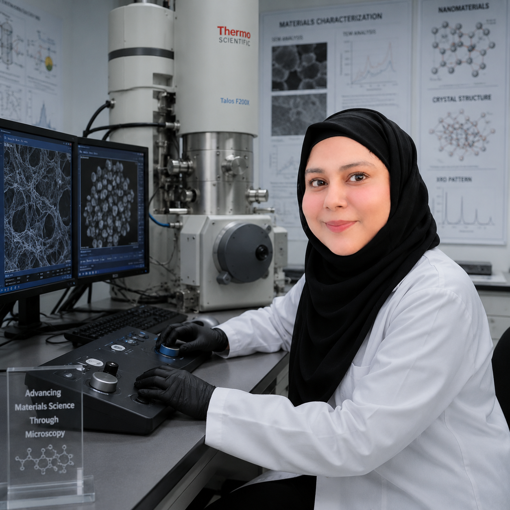

A scientist who sees molecules as puzzles — each one waiting to reveal a new therapeutic possibility.

When I first walked into a chemistry lab as an undergraduate, I had no idea I'd spend the next decade working on one of medicine's hardest problems — designing better drugs for cancer. But here I am, and I wouldn't trade it for anything.
My PhD at the University of Lucknow was a deep dive into ruthenium chemistry. Ruthenium is a rare transition metal that, when built into the right molecular architecture, can seek out cancer cells and disrupt their growth. Think of it as a precision-guided probe at the molecular scale — except you build it yourself, atom by atom, in the lab.
But here's the part I love most: I don't just work at the bench. I also work on a computer. Using DFT (density functional theory) and molecular docking, I simulate how my new compounds interact with biological targets — often before I even synthesise them. It's like giving a molecule a 3D roadmap to follow, then checking whether it actually follows it in the lab.
That back-and-forth between computation and experiment is what drives me. Each discovery feeds the next question, and that chain of curiosity is what makes research feel more like an adventure than a job.